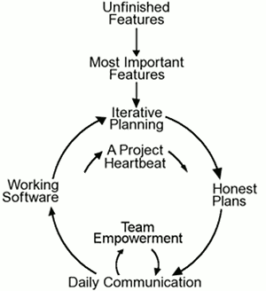

Agile Management: Agile Methodologies

AGILE Methodologies
SCRUM
As O'Connor (2020) aptly describes, the scrum methodology is characterized by short phases or “sprints” when project work occurs. During sprint planning, the project team identifies a small part of the scope to be completed during the upcoming sprint, which is usually a two to four week period of time. At the end of the sprint, this work should be ready to be delivered to the client. Finally, the sprint ends with a sprint review and retrospective—or rather, lessons learned. This cycle is repeated throughout the project lifecycle until the entirety of the scope has been delivered. In many ways, this mirrors aspects of traditional project management. One of the key differences, however, is how one creates “shippable” portions of the project along the way rather than delivering everything at the very end. Doing so allows the client to realize the value of the project throughout the process rather than waiting until the project is closed to see results. It’s important to remember that although Scrum is an Agile approach, Agile does not always mean Scrum—there are many different methodologies that take an Agile approach to project management.
Increment: something that must be done and in a usable condition
Kanban
The word Kanban is of Japanese origin and its meaning is linked to a time concept, “just-in-time”. As a methodology it has been around for at least 50 years in some form. It is a visual look at work that needs to be done and helps identify bottlenecks and waste. The visual representation is in a grid format and has individual cards or notes within each section. These boards might be physical or digital. The workflow processes start at the left end of the grid and work flows over to the right end as it heads toward completion (via cards). As the University of Alabama School of Business summarizes, there are five key tenets of Kanban, and these apply particularly within information systems and software development environments. These encompass:
- Visualizing the workflow: At the beginning of the project, stakeholders create the visual, column-based board described above, where cards within each column represent specific workflows or tasks as part of the project. This visual mapping of project work helps keep things organized and enables project leaders to easily see progress and how close the team is to their final goal or project wrap.
- Limiting work-in-progress: Kanban project management aims to reduce multitasking, and encourages team members to focus on a single task before moving on to the next. Kanban provides limits to how many tasks can be taken on at a single time in order to reduce inefficiency. For instance, in the lens of Kanban for software development, a project may have a limit of three items within the Development queue. If new items are ready to move into Development, they must wait until the three already in the queue are addressed and can be moved on to the Testing phase, the Project Management Institute explains.
- Measuring and managing workflow: This is where the “pull” element comes into play. As tasks are completed, cards are pulled across the grid on the visual project board. In this way, teams can easily review work that’s in progress, items that have to be begun, and those that are nearing completion.
- Creating explicit policies to direct processes: Within Kanban project management, there are clearly defined policies to guide all working processes. Some of these may be outlined by project leaders within the team, and others may come from management or the project owner. These policies can include things like which tools team members are to use in production, or the limits placed on tasks in progress.
- Using models to identify opportunities for improvement: Thanks to the visual element of Kanban, team members can leverage the visual workflow board or map to pinpoint any obstacles standing in the way of the team’s progress and work to improve on these areas. Teams often meet on a daily basis to review the board, and team members may notice areas that can be enhanced. In addition, task limits may provide idle downtime for team members, which can then be leveraged to review working processes and find areas for continuous improvement. In Japanese, this concept of continuous improvement is called Kaizen, and it is an important part of the Kanban style.
Story card: A Kanban story card is a visual representation of a work item. Translated from Japanese, it literally means a visual (kan) card (ban). It is a core element of the Kanban system as it represents work that has been requested or is already in progress.

Check out this simple Kanban Toolkit flier created by the University of Illinois
Extreme Programming (XP)
Extreme Programming has five basic values:
- Communication
- Simplicity
- Feedback
- Courage
- Respect (Siau, 2007).
Within it there are four basic activities:
- Coding
- Testing
- Listening, and
- Debugging (Siau, 2007).
It focuses on twelve core practices:
- Planning game
- Small releases
- Metaphor
- Simple design
- Test
- Refactoring
- Pair programming
- Continuous integration
- Collective ownership
- On-site customer
- Coding stanards, and
- 40-hour work week (Francisco, Holcombe, Gheorghe, 2003).
It adheres to some basic principles
- Humanity
- Economics
- Mutual benefit
- Self-similarity (patterns that work)
- Improvement
- Diversity
- Reflection
- Flow
- Opportunity
- Redundancy (approach difficult problems in multiple ways)
- Failure (seen as acceptable)
- Quality
- Baby steps
- Responsibility (Zeil, 2019).
As a conceptual diagram:

(image from Wells, 2009)
SCRUMBAN
Integrates Scrum and Kanban principles
WATER-SCRUM-FALL
Using Scrum in a more traditional waterfall project management environment.
Other Agile Methodologies
Here is a list of 42 agile methodologies that might be used.
References
O'Connor, S. W. (2020). Agile vs. Scrum: What's the Difference. Northeastern University Graduate Programs. Retrieved March 24, 2021 from https://www.northeastern.edu/graduate/blog/agile-vs-scrum/
ProductPlan. (n.d.). Agile Manifesto. Retrieved March 24, 2021 from https://www.productplan.com/glossary/agile-manifesto/
Wells, D. (2009). Agile Software Development: A gentle introduction. Retrieved March 24, 2021 from http://www.agile-process.org/
Zeil, S. (2019). Extreme Programming (XP). Retrieved March 24, 2021 from https://www.cs.odu.edu/~zeil/cs350/latest/Public/xprogram/index.html